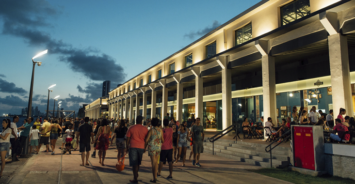

Dentre os passeios ao ar livre também é possivel fazer uma visita ao Centro de Artesanato de Pernambuco e ter contato com as obras de inumeros artistas Pernambucanos que expõem e vendem suas peças.

E apos os passeios ainda é possivel fazer uma pausa para as refeições e ainda curtir a paisagem com vista para o estuário.
